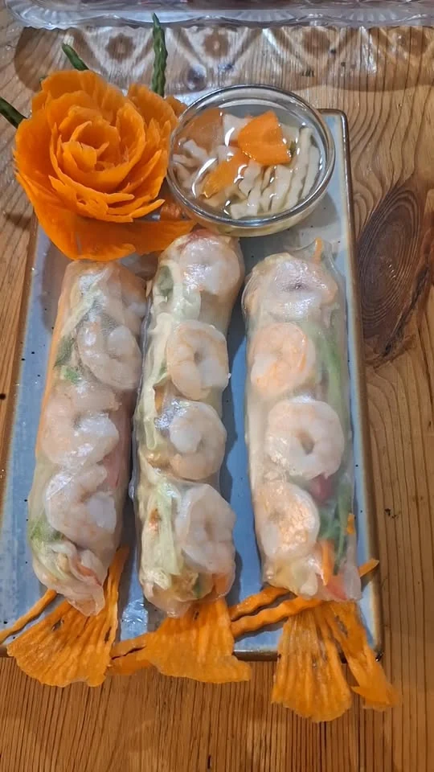
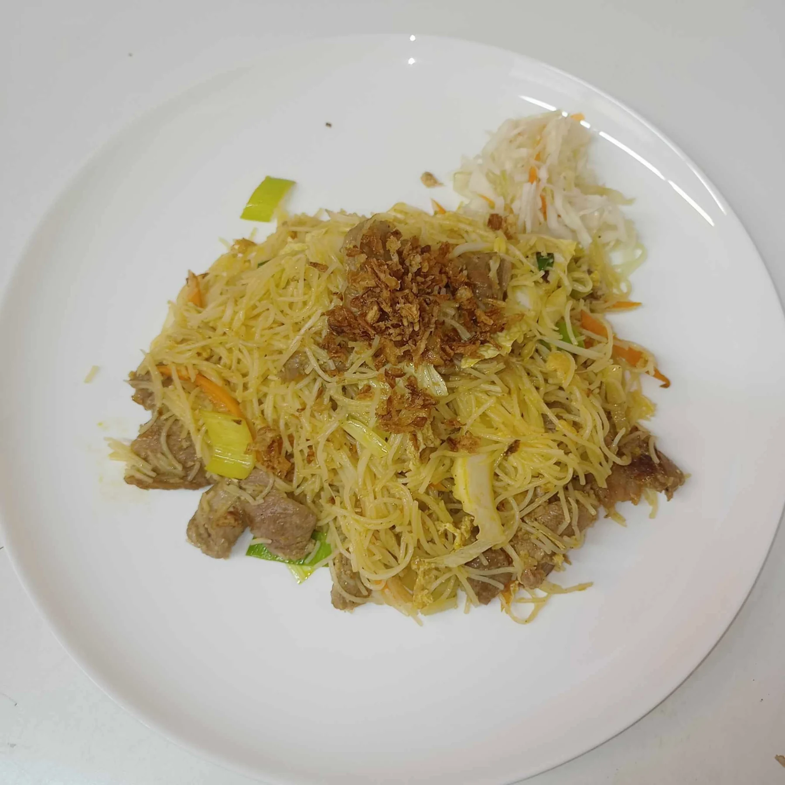

Restaurace ASIA · Volary
Jídelní lístek
Asijská a vietnamská kuchyně. Všechny ceny v Kč.
Polévky
2. Pekingská polévka
55 Kč150 ml · Alergeny: 1, 3
3. Zeleninová polévka
45 Kč150 ml
Předkrmy
4. Čerstvé jarní závitky
90 Kč2 ks · Alergeny: 2, 3
5. Smažené závitky
105 Kč3 ks · Alergeny: 1, 3
6. Mini veganské závitky
100 Kč10 ks · Alergeny: 1, 3
7. Smažené krevety obalované kokosovou strouhankou
115 Kč5 ks · Alergeny: 1, 2, 3
8. Smažené obalované krevety
135 Kč3 ks · Alergeny: 1, 2, 3
9. Krevetové knedlíčky
115 Kč5 ks · Alergeny: 2
10. Hamburger se smaženým sýrem
120 Kč120 g · Alergeny: 1, 3, 7

Saláty
11. Míchaný salát
75 Kč130 g
12. Kuřecí salát
125 Kč130 g
Hlavní jídla
13. Nudlová polévka Pho / Bun
350 ml
- Kuřecí maso185 Kč
- Hovězí maso185 Kč
14. Bun Nam Bo
250 g · Alergeny: 5
- Hovězí maso185 Kč
- Tofu · Alergeny: 6185 Kč
- Smažené závitky · Alergeny: 1, 3185 Kč
15. Smažené nudle
250 g · Alergeny: 1, 3, 6
- Kuřecí maso150 Kč
- Vepřové maso160 Kč
- Hovězí maso175 Kč
- Krevety · Alergeny: 2180 Kč
- Kachní maso245 Kč
- Tofu · Alergeny: 6150 Kč
16. Smažená rýže
250 g · Alergeny: 1, 3
- Kuřecí maso155 Kč
- Vepřové maso165 Kč
- Hovězí maso175 Kč
- Krevety · Alergeny: 2190 Kč
- Kachní maso245 Kč
- Tofu · Alergeny: 6155 Kč
17. Smažené rýžové nudle
250 g · Alergeny: 3
- Kuřecí maso165 Kč
- Vepřové maso175 Kč
- Hovězí maso185 Kč
- Krevety · Alergeny: 2190 Kč
- Kachní maso245 Kč
- Tofu · Alergeny: 6165 Kč
18. Smažené skleněné nudle
250 g · Alergeny: 3
- Kuřecí maso165 Kč
- Vepřové maso179 Kč
- Hovězí maso185 Kč
- Krevety · Alergeny: 2190 Kč
- Kachní maso245 Kč
- Tofu · Alergeny: 6165 Kč
19. Kung Pao s rýží
250 g · Alergeny: 1, 5, 6
- Kuřecí maso175 Kč
- Vepřové maso180 Kč
- Hovězí maso185 Kč
- Krevety · Alergeny: 2190 Kč
- Tofu · Alergeny: 6175 Kč
20. Restovaná zelenina s masem a rýží
250 g · Alergeny: 6
- Kuřecí maso170 Kč
- Vepřové maso185 Kč
- Hovězí maso185 Kč
- Krevety · Alergeny: 2185 Kč
21. Pikantní se zeleninou a rýží
250 g
- Kuřecí masoCena na dotaz
- Vepřové masoCena na dotaz
- Hovězí masoCena na dotaz
- Krevety · Alergeny: 2Cena na dotaz
- Kachní masoCena na dotaz
- Tofu · Alergeny: 6Cena na dotaz
22. Křupavá kachna se zeleninou a rýží
Cena na dotaz250 g · Alergeny: 1, 6
23. Kari se zeleninou a rýží
250 g · Alergeny: 7
- Kuřecí maso175 Kč
- Vepřové maso175 Kč
- Hovězí maso185 Kč
- Krevety · Alergeny: 2190 Kč
- Kachní maso235 Kč
- Tofu · Alergeny: 6175 Kč
24. Kuřecí řízek s hranolkami
195 Kč250 g · Alergeny: 1, 3
25. Smažený sýr s hranolkami
165 Kč250 g · Alergeny: 1, 3, 7
26. Voňavé a křehké kuře s rýží
185 Kč250 g · Alergeny: 1, 3, 6
27. Smažené kuřecí kousky s hranolkami
175 Kč250 g · Alergeny: 1, 3
35. Sladkokyselá omáčka se zeleninou a rýží
250 g
- Kuřecí maso175 Kč
- Vepřové maso175 Kč
- Hovězí maso185 Kč
- Krevety · Alergeny: 2190 Kč
- Tofu · Alergeny: 6175 Kč
- Smažené kuřecí kousky · Alergeny: 1, 3175 Kč
36. Houby s rýží
250 g
- Kuřecí maso175 Kč
- Vepřové maso175 Kč
- Hovězí maso185 Kč
- Krevety · Alergeny: 2195 Kč
- Kachní maso245 Kč
- Tofu · Alergeny: 6175 Kč
37. Bún chả – grilované vepřové maso s rýžovými nudlemi
189 Kč250 g
38. Po thajsku se zeleninou a rýží
250 g
- Kuřecí maso179 Kč
- Vepřové maso185 Kč
- Hovězí maso190 Kč
- Krevety · Alergeny: 2195 Kč
- Kachní maso245 Kč
- Tofu · Alergeny: 6179 Kč

Na horké plotýnce / Mini horký hrnec
28. 3 druhy masa se zeleninou a rýží
265 Kč350 g · Alergeny: 6
29. Křupavá kachna se zeleninou a rýží
255 Kč350 g · Alergeny: 6
30. Krevety s tofu, zeleninou a rýží
265 Kč350 g · Alergeny: 2, 6
Vegetariánská jídla
31. Restovaná zelenina s rýží
160 Kč250 g · Alergeny: 6
32. Restovaná zelenina s tofu a rýží
175 Kč250 g · Alergeny: 6
Dezerty
33. Smažený banán
85 Kč80 g · Alergeny: 1
34. Krevetové lupínky
85 Kč50 g · Alergeny: 2
Přílohy
Bílá rýže
45 Kč120 g
Hranolky
45 Kč120 g
Krokety
50 Kč120 g
Nudle
65 Kč120 g · Alergeny: 1
Kečup / Tatarka
18 Kč20 g · Alergeny: 3
Chili
10 Kč10 g
Hoisin omáčka
30 Kč30 g · Alergeny: 6
Malá krabice s sebou 8 Kč · Velká krabice s sebou 12 Kč
Alergeny jsou uvedeny podle jídelního lístku restaurace. S dotazy na alergeny se prosím obraťte na obsluhu.
Ceny jídel č. 21 a 22 ověřte telefonicky.